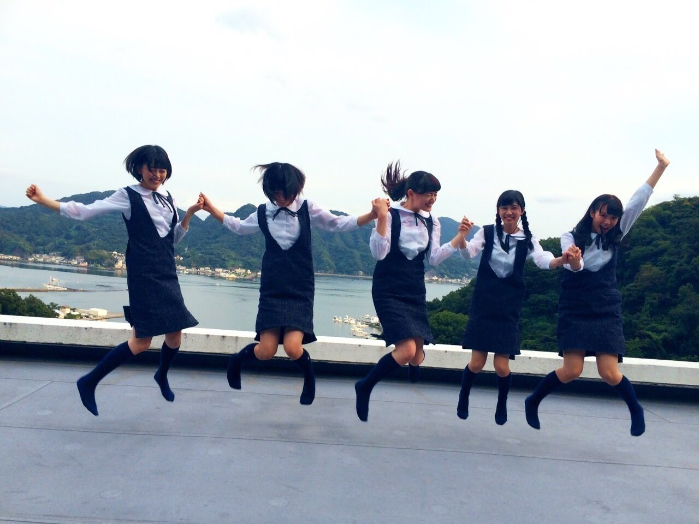
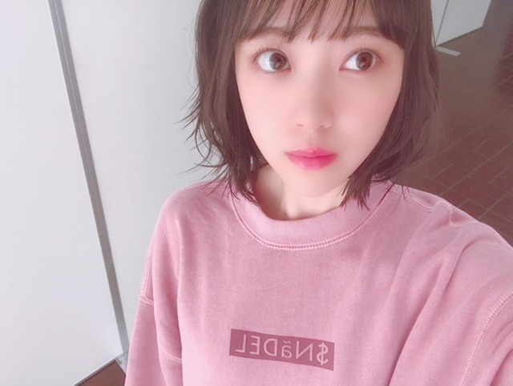
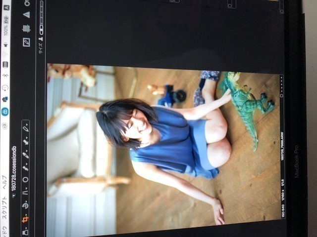
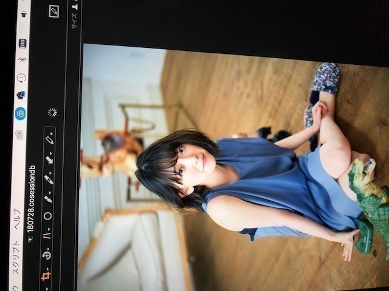
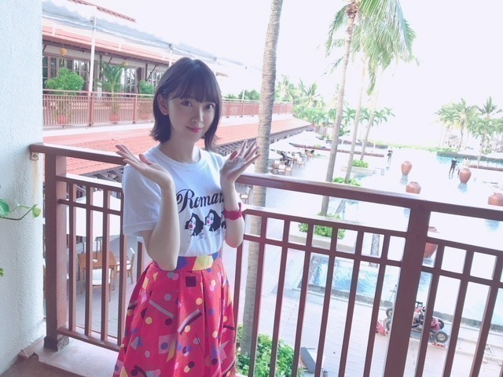

2018/0819Sun染めたい染まりたい
こんにちは〜
志乃ちゃんは自分の名前が言えない
君の名前で僕を呼んで
を最近は観ました。
繊細さと大胆さの共存が魅力でストーリーや登場人物はもちろん音楽も風景もファッションも良いの！
あーまた観たいなと思える2作品でした
「志乃ちゃんは自分の名前が言えない」
ここさけを見た時に似た感情が
あったかなぁ
伝えたいこと、知りたいことがあって
でも言えない 飲み込んでしまう言葉がいくつもある、もどかしさ。辛さ。
少なくとも周りの環境や人も影響はしているけど自分自身との戦いでもあって、私はずっと
がんばれ。って応援しながら観ていました。
言葉の大切さと怖さを同時に痛感することのできる映画は好きです
志乃ちゃんの心の色みたいな優しい音楽、
消えてしまいそうな時間に見える景色や光、
個人的に大人への近道のMVで思い入れのある場所もたくさん出てきて懐かしくもなりました

MV撮影から2015.9月だからもうすぐ3年！
この時の悔しさ 楽しさを何ひとつとして忘れたくないなぁ
ここがあるから頑張れる。頑張りたいです。

「君の名前で僕を呼んで」
同性愛を描いた映画なのですが
壁を感じる恋に対する葛藤 劣等感 幸せ
主人公の目の奥にはいつも彼に対する愛が存在していてふとした仕草1つ1つに目が離せませんでした
音楽も街並みも可愛くて
ファッションもね、色の合わせ方や肌の感じがおしゃれでゆるくてステキでした
車もラジオもプールもなにもかもがかわいい
恋はその人自身のものでしかなくて...
たった1人の好きな人の存在が自分の全てを大きく揺さぶりどうしようもなくなることもあるんだなぁって。
家族も素敵でした
"かけがえのないもの"について考えさせられる映画でした
EX大衆さん 表紙をさせていただいています
発売中です
撮影は、台風の日でしたが
凄くマイペースに撮影させていただきました...

ゆっくりゆっくり動く恐竜
を見て笑う私

なんとも言えない顔
クリアファイルもついています！是非。
新曲 ジコチューで行こう
のオフショットを見返したらね、

見事にほぼほぼ、このポーズをしていました。笑
笑っちゃう
また載せます
では、また〜
涼しいね〜
2018/08/19 17:54


コメント(457)
いつも応援しています！
画面から伝わる感情に共鳴できたとき映画を観られて幸せって思える！
最近は温度差があるから体調管理に気をつけて頑張ってね٩( 'ω' )و
映画の紹介、ありがとうございます♪
いい映画を観ると、その良さとか自分の感じたことを人に伝えたくなりますよね…‼︎
ネタバレしないように気をつけつつ、でも人の興味を引く言葉を選んで、それがまたちょっと楽しかったり(笑)。
自分と未央奈でちょっとした共通点が見つかったような気がして、なんだか嬉しいです♪
『志乃ちゃんは自分の名前が言えない』は、何かの番組であらすじ紹介されていたのを見たことがあります。
『あ、これは、心にぐっとくるやつだ』って確信はあったんだけど、未だ見れてません。
時間を見つけて、見てみますね‼︎
言葉って、本当に難しいですよね。
言葉で勇気づけられることもあるけど、深く傷つくこともある。
人の心と心をくっつけたり、離したりするほとんどの契機は、何らかの『言葉』による気がします。
『君の名前で僕を呼んで』。
未央奈の解説からすると、これまた心の奥底が揺さぶられそうな作品のようですね…‼︎
同性愛は難しいテーマですが、人間誰しも恋愛に思い悩み、いろんな葛藤や劣等感、心が通じ合う幸福感は感じたことがあるわけで、いろいろ共感できる部分はあるような気がします♪
どちらの映画も単なる娯楽映画ではなく、考えさせられるような、心の奥底に残る映画みたいですね‼︎
自分も最近そういう映画の方が好みなので、機会があったら観てみようと思います♪
ではでは、また。
明日も未央奈にとっていい1日になりますように♪
名古屋、楽しみだな
こんばんわ〜(=゜ω゜)ノ
EX大衆しっかり読ましてもろいましたよ
写真では
堀ちゃんの天真爛漫さとミステリアスガール！
大人びた表情や笑顔が弾けてる表情もどれも好きだしカワイイの一言です
そして、特に印象に残ってる所は
やっぱ剣に盾を持ってる写真かな〜
あと、パジャマ姿で玉子を手に持って眺めてる写真が１番気に入ってます
そしてインタビューでは、
未央奈の１番苦しかった次期や
サンクエトワールでいい機会が出来たんですね。
僕は大人への近道は凄く好きだよ〜
毎晩聴いてるし
MVから3年か！早いな〜
ひめたんのお茶目で笑顔
かなちゃんのムードメーカー
未央奈は天真爛漫
日奈子は元気で明るい
蘭世は幼さ可愛い〜
MVではみんなが楽しく演じてるけど
歌詞は少し切ないね〜
僕もこの歌を聴いてると
未央奈がんばれ、
サンクエトワール頑張れと応援したくなるし
大好きな曲だよ。
未央奈にとって『大人への近道』と
サンクエトワールは大切な青春と宝物だね。
五人揃っての写真ありがとう❤️
ひめたん抜けた穴は
２期生か３期生から１人加わってもらって...。
出来れば！絢音ちゃんで...。
サンエトまた復活して欲しいな〜✨
僕にとってサンクエトワールは
永遠に不滅です
２期生大好き！未央奈大好き！
個人的なお話し！
僕は
昨日は気合のオレンジユニホームを着て
ちなみに元清水の『澤登正朗 』さんの10番のユニホームです
Jリーグ、
清水エスパルスVS浦和レッズ戦を
ホーム静岡にあるアイスタで熱ーーく
サッカー観戦してきました
試合はエスパが
あ！エスパって清水エスパルスの事です(笑)
先制点を決めるエスパ有利のペースでしたが！！さすが強豪チームのレッズ！！直ぐに点を決め返すハラハラドキドキの白熱した展開だったんですよ！
結果はお互い勝敗を分けあった3対3で
勝ち点1でした(^o^;)トホホ(;´д｀)
もし！エスパが勝ってたら...
選手とオレンジサポーターがお互い肩を組みあってする勝利の勝ちロコっていうのがあるんですけど
それも今回はお預けって事で(笑)
これで４試合勝利がないけど(;´Д⊂)
次こそエスパに勝って貰いたい！！
残りの試合もオレンジ魂の応援したいと思いますよ(笑)
あ！未央奈の乃木坂46は勿論ずっとず〜〜〜っと応援するよ〜✌️
オレンジ命と堀命ですから(笑)
未央奈いつも更新ありがとう❤️
あ！
ジコチューで行こう
オフショット写真ありがとう
またほぼほぼに贈ってね(笑)
夏もあと少しで終わりにちかづいてますね。
そして
秋はもうすぐですよ〜
では
この頃気温も下がって肌寒いけど
体調に気をつけてお仕事頑張ってください。
夜は日中よりもっと肌寒いので風邪引かないようにね。
んじゃ
未央奈おやすみ
まったね〜o(゜▽＾)ノ
こんばんわ(^o^)/
いつも更新ありがとう～❤️
僕にとって
サンクエトワールは
大好きなユニットです♪
とくに大人への近道MVは凄く好きだな～
未央奈と日奈子のいくじなしの台詞...。
それと！歌詞にも
『髪を染めたい！殻を破りたい！』
ほか色々な意味があって...。
なんか！！
「志乃ちゃんは自分の名前が言えない」
の映画と共通点があるよね～～
この事は！！！
いまの未央奈も、
そ～なのかなって思ったりしてます。
誤解だったらごめんねm(_ _)mね。
MV～３年かぁ...。早いね！
大人への近道聞くたびに
未央奈がんばれ、サンエトがんばれって
応援したくなるいい曲だね～✨
大人への近道と君に贈る花がない、は
自分にとって１番大好き曲です！
いまも毎晩欠かさず聴いてるよ✌️
『5th YEAR BIRTHDAY LIVE
2017.2.20-22 埼玉スーパーアリーナ』でも
蘭世が手に！ひめたん大好き！って
何度観てもあの場面は感動するね～
サンクエトワール は永遠に不滅です✨
未央奈、日奈子、花奈、蘭世、日芽香、
ちゃん(省略)
ジャンプショットありがとう❤️
しっかり保存
サンエトまた始動して欲しいな～
あ！EX大衆買ってきたよ☺️
先週のBOMBに続きEX大衆表示おめでとう
二週連続で
未央奈のグラビアやインタビュー
見れるの嬉しいな～ρ( ^ｏ^)b_♪♪
どのページも◎で
恐竜ラジコンで遊んでる所や
恐竜見て笑う未央奈
めちゃ可愛かったよ～
それに！
セブンネット限定ポストカードも
未央奈だったし♪♪
クリアファイルの中に
大事に保管です！！
いまでは
完全フル装備の宝箱いきです(笑)
買って大満足でした✌️☺️
インタビューでも
未央奈は、いつも素直に答えて
くれる所が好きだなぁ。
読むだけで胸が痛みます。
でも！
いまは大勢のファンも着いています✌️
そして！頼もしいお母さんもいますね❤️
たくさんの夢に向かって☆☆ミ
坂を上って行こう
堀未央奈がんばれって応援するぞq(^-^q)
そして！
ジコチューで行こう！の
オフショット(*^-゜)vThanks!❤️
？ポーズ可愛すぎるって(ノ≧▽≦)ノ
堀ちゃん(笑)
恐竜の写真も
つぎも待ってるで～
あ！最近ほんと涼しいね～
秋は間近ですよ～
体調には気をつけてください。
では！未央奈♪またねo(゜▽＾)ノ
最後にタイトル！
染めたい！！染まりたい！
僕は賛成だよ✌️
おやすみおな
今日もお疲れ様です
コメント載ってなかったので再コメント失礼します
映画最近観れてないので、何か堀ちゃんのおすすめあれば教えて欲しいです
古いけど、自分はターミネーターとかバイオハザードとかは一体何回観たんだってくらい好きです（どっちも2が特に好き）
EX大衆まだ買ってないので、買いますね（もしかしたら会社の売店にあるかも）
先週の絢音ちゃんとのレコメンもとても面白かったです
またすずほりコンビで聴きたいです
最近は朝と夜は涼しいですが、温度変化で風邪には気をつけて下さい
明日も頑張りましょう！
再コメントで失礼しました
ありがとうございました
りょーへー(R.N.イナダウアーびーむ)だよ♪
今日は、ニコル君のお写真で癒されたなぁ！甘えてくるなんて、可愛いね！お写真から可愛さが溢れてる！あと、ニコル君って思ったより大きいのにちょいとびっくり！
夏休みは、母校で剣道をやってるんだ！かなりの回数をやってるから、感覚を取り戻してきた！ってのもね、約2年振りに初めて、まだ数ヵ月しか経ってないからさ！笑 まだまだ頑張るぞいっ！
お家で歌うなんて、かわいいなぁ♪
#毎日コメント
#今日もお疲れ様
#未央奈ちゃんの
#ううん
#って可愛い
#好きやわぁ
#くすみ○○
#くすみピンク
#似合っとるよ
#巨峰が
#美味しすぎる
#最高や
#明日も楽しみおな♡
#おやすみおな(-.-)ノ⌒-~
癒されました～
今日も1日お疲れ様でした
未央奈もたまには甘えてくれたら我は大喜びするよ(´∀｀)
乃木中の髪型珍しいね
高めのポニー可愛い♡
でもあの制服って事は結構前に収録したやつかな？
では、明日も1日楽しもうd(@^∇ﾟ)/ﾌｧｲﾄｯ♪
おやすみおな☪️
応援してます✨
みおなすきだよ( ´_ゝ`)❤️
泣けた、映画館で見たかったって思った
泣ける映画オススメあったら教えてほしい
季節の変わり目気をつけてね！
ブログありがとう❗️
その映画めっちゃ気になるなー
今度見てみようかな
『大人への近道』のMVって確か静岡で撮影だったよね
照らし合わして見たくなった
ゆうたんより
ジコチューで行こうの写真いいですね
たくさん聴いてますよ。やっぱいい曲ですね
握手会で毎回奮闘です、、、
私かおもしろくないんやろなぁ、、、
未央奈の笑顔見るまで頑張る
未央奈さんにはそれ以前からも注目していましたが、サンエト結成あたりから本格的なファンになりました。
いまや「単推し」で、他のアイドルに目移りすることはありません。
もうあの頃の「五つ星」がそろうことはないかもしれませんが、サンエトはぼくのなかで永遠に輝いていますよ！
みおなが言ってた、カメラを止めるな！
観たいなぁ～
話題なの知らなかった…不覚。
あとはプレデター！
みおなまたかわいくなった気がする(^-^)
シェイプ・オブ・ウォーターのＲ１８完全版を観てみました・・・m(__)m
ビジュアルエフェクトが、さらにハイクオリティに!!主人公二人の映像表現が強調されて見応え抜群(*_*)
最近では、噂に名高い、
大傑作スリービルボードとバーフバリ二部作と
ジグソウ・ソウ・レガシーとかもオススメ度高いです・・・＼＾o＾／
体調に気をつけて行きましょう～・・・m(__)m
いつも楽しく読んでます！
今日も今日とて頭の中が堀ちゃんに染まってました( ´ ▽ ` )笑
相変わらず写真全部可愛いです(o^^o)
恐竜を見て笑顔の堀ちゃん、なんともいえない顔の堀ちゃん、パッとしたポーズの堀ちゃん、なんでこんなに全部可愛いんでしょう( ´ ▽ ` )
そして堀ちゃんカラーはオレンジですが、ブルーの洋服も凄くお似合いですね！涼しげ！
個人的に好きな色がブルーなので、衣装いい色だな〜って見ながら目線を上に移すと、色を忘れるぐらいの可愛いお顔が飛び込んできてビックリしました( ´ ▽ ` )笑
春夏秋冬いつでもどんな衣装でも可愛い堀ちゃん、本当に素敵です(o^^o)
話は変わりますが、悔しさをバネにできること、同時に味わえた楽しさを忘れないこと、凄く素敵なことだと思います(^^)
人はどうしても悔しいことがあったらその経験は悔しいものだった、などと一つの感情にとらわれがちになってしまうと思います。
堀ちゃんのように一つの出来事に色んな想いを認められれば、その経験が2倍も3倍も自分を成長させてくれます。
僕も色んなことをそう思えるように堀ちゃんを見習いたいです(o^^o)
さてさて、台風来てますね！
連続ですし気をつけてくださいね、今回は台風の目がハッキリあるみたいなので、一瞬天気良くなっても油断は禁物です( ´ ▽ ` )
今日も堀ちゃんにとって実りある1日でありますように！(o^^o)
では、またー！
ブログありがとう！
なんか、少し涼しくなってきたね〜
台風の影響も大きいのかな？
志乃ちゃんは自分の名前が言えない
ワシも観たよ〜
なんか、映画としてのエンターテイメントよりも
リアルさを感じる作品だったね。
観終わった後に残る
不消化な部分に
リアルな青春を感じた。
最近、感受性や読解力って
日頃からの積み重ねも重要だと感じている。
目立つ部分で判断して、自分の中で評価しているなぁ〜と。
もっと、繊細な本質の部分が全く見えていないのかもと。
一回、自分の価値観を無にして
モノを見つめないといかんなぁ〜と思っている。
まだまだやなぁ〜。
では、仕事に行ってきます！
わたる⊿
おはよー！！
最近涼しかったのに今日は蒸し暑いね(∵`)
私は今日は仕事休みなのでカフェ巡りしてます♪♪
26日のライブ楽しみ！！
チャァオ～～!☆彡
ミオッキ～～～⤴⤴⤴
こんにちは～～～⤴⤴❕❤❤❤❤❤❤❤❤❤❤❤❤❤笑顔
ヾ(@゜▽゜@)ノ
１番下写メのミオッキ～～～⤴⤴⤴
私、すごくお気に入りだよぉ～～～⤴⤴⤴❕❤❤❤❤❤❤❤❤❤❤笑顔
本当にミオッキ～～は、綺麗だなぁああぁ～～～⤴⤴❕❤❤❤❤❤❤❤❤❤❤❤❤笑顔
美しいなぁあああぁ～～～⤴⤴❕❤❤❤❤❤❤❤❤❤❤❤❤笑顔
それじゃ～ミオッキ～～お仕事頑張ってねぇ～～⤴⤴❕❤❤❤❤❤❤❤❤笑顔
またねぇ～～⤴⤴❕❤❤❤❤❤❤❤❤笑顔
＼(*^▽^)／∮#☆*☆*☆∮♪♪
☆大人しい、おすまし！より☆彡
俺の１推しだから、これからも頑張ってね‼
大好きだよ‼
懐かしい画像ありがとー
ブログ更新まってるね～
ももんが
フラッシュスペシャル、僕は買ったよ。みおなちゃん、めっちゃかわいかったよ。
みおなちゃん、体調に気をつけて仕事頑張ってね。
またコメントするね。
ブログ、更新ありがとう。
タイトルの「染めたい染まりたい」意味深いですね。
●『志乃ちゃんは自分の名前が言えない』
予告編から胸に刺さる映像で気になっていました。
志乃ちゃん、加代ちゃん、菊池君、皆、一歩前へ踏み出そうとしている。でも、うまく出来なくて、観ていて苦しくて切なくて。
自分をさらけ出すのは、他人に自分の気持ちを伝えるのは、大変なこと。
緊張も、嘲笑される恐怖もあるし。
初めて心を通わせられた人と、他人が仲良くなることを受け入れるのは、難しいこと。
でも、それらを出来るようになるのが成長するということ。
自分から一歩を踏み出すことの凄さ、それと、他人に与える影響の大きさを考えています。
歌うこと、気持ちを吐露すること。
文化祭、志乃ちゃんの必死さ、それを見た加代ちゃんの複雑な表情。
表現することって何だろうとも、思います。
懐かしい風景は、『大人への近道』のMVを観ていれば、そうだと気付きます。
もしかしたら、『大人への近道』を全く知らない人とは、少し違う観方をしているかも。
未央奈さんが繰り返しみせてくれる、未央奈さんを支えてくれる大切な場所だから。
●『EX大衆』
この雑誌の表紙は初めてですね。おめでとうございます。
表情が生き生きしている写真が多くて、よかったです。
インタビューも、サンエトのこと、映画のこと、２期生のこと、相楽伊織さんのこと、北野日奈子さんのこと、など、なるほどなぁと思いながら、読みました。
なかでも「凡人」という言葉は印象に残りました。私の中では『あの教室』のMVとも重なるイメージでしたので。
●「ここがあるから頑張れる。頑張りたいです。」
「凡人」でも、毎日の小さな努力の積み重ねで少しずつでも伸びていける。そこは信じたいです。
ステージに立つ未央奈さんが「凡人」なら、私はごま塩のごまの粒ひとつでしかないです。もはや人ですらない（笑）。
期待と切なさを込めてみています。何より、たのしみましょう。
もう長くなってしまったので、このへんで。
駄文につきあってくれて、ありがとうございました。
どんどん綺麗になっていて、７５５動画とかブログも一生懸命あげてくれてモデルもやって努力家だなあっていつも感嘆してます。
常に高いクオリティでのモチベーションをを維持するのってすっごく大変なのに弱音を上げずに陰で努力する姿はすごいなって！
自分は太ももがどうしても痩せなくって、ジコチューのジャケの美脚に憧れちゃいます。
あとどうやったらそんなにお友達が作れるのかw！根暗な自分に分けて欲しいほどのコミュ力！
私も好きな映画セレクト2選だったので感想に超同意してましたー！
君の名前で僕を呼んでのティモシーくんは漫画みたいなヴィジュアルの美少年で惚れ惚れしちゃいました。
私はチョコレートドーナツも号泣したいときのお勧めです。
あと
アホになりたいいときには
ゾ ン ビ ー バ ー
お気に入りのB級ホラーなのでぜひみて欲しいです！！
本当にくだらなくって爆笑しました！
写真に見入ってしまいます笑
可愛すぎて(^｡^)
ブログ更新ありがとう
可愛いなー(≧∇≦)
画面から伝わる感情に共鳴できたとき映画を観られて幸せって思える！
最近は温度差があるから体調管理に気をつけて頑張ってね٩( 'ω' )و
ここさけを観た時に似た感情が
あったんですか...
私は、自分を重ねて観ていました
ここさけ。
「大人への近道」のMV、曲
好きです！
愛や人間って、
「みんな違って、みんないい」
なんとも言えないかわいい未央奈さんの顔
好きですよ！
そのポーズは何？♡笑
またね〜
ほんとに。ね〜
anan特別編集
乃木坂46真夏の全国ツアー2018
公式SPECIAL BOOK 、
買いました！
買って良かった〜♪
大人への近道は、未央奈ちゃんを応援するキッカケになった曲だから思い入れがあります。中元さんは卒業したけど、またライブで聴けたら嬉しいです。
EX大衆の表紙はお姉さんの未央奈ちゃんに感じました、綺麗でした。クリアファイルは使うと傷むから、保存版にします。プレゼントに応募しておきます。
もうすぐ名古屋ドーム、ワクワクです。
乃木坂46と頑張ってるcuteでsmartな未央奈ちゃんを応援しています。
応援するぞq(^-^q)
２期生みんな大好き！
恐竜見て笑う未央奈
めちゃ可愛かったよ～
写真ありがとう
そして特典も
クリアファイルとセブンネット限定ポストカードついて大満足でした✌️☺️
ジコチューで行こう！の
オフショット(*^-゜)vThanks!❤️
？ポーズ可愛すぎるって(ノ≧▽≦)ノ
堀ちゃん(笑)
つぎも待ってるで～
あ！最近ほんと涼しいね～
秋は間近ですよ～
体調には気をつけてお仕事頑張ってください。
今日のショールーム楽しみにしてます☺️
んじゃ
今日も一日頑張りましょう。
未央奈またねo(゜▽＾)ノ
奈&２期生をずっと
応援するぞq(^-^q)
２期生みんな大好き！
恐竜見て笑う未央奈
めちゃ可愛かったよ～
写真ありがとう
そして特典も
クリアファイルとセブンネット限定ポストカードついて大満足でした✌️☺️
ジコチューで行こう！の
オフショット(*^-゜)vThanks!❤️
？ポーズ可愛すぎるって(ノ≧▽≦)ノ
堀ちゃん(笑)
つぎも待ってるで～
あ！最近ほんと涼しいね～
秋は間近ですよ～
体調には気をつけてお仕事頑張ってください。
今日のショールーム楽しみにしてます☺️
んじゃ
今日も一日頑張りましょう。
未央奈またねo(゜▽＾)ノ
EX大衆堀さんが表紙の時点で欲しいのにそれにクリアファイルが付いてくるなんてぜっっったいに買う以外の選択肢ないです！！！
いろいろと予定があってまだ買えてないのですが今日は買えそうなので今日必ず買いますね！！
映画最近全然見てないです…
堀さんがよく映画を観たっていう報告を聞くので堀さんが観たよっていう映画観てみようかなって思います！
大人への近道ぼくの大好きな曲です
あ！EX大衆買って読んだよ☺️
先週のBOMBに続きEX大衆表示おめでとう✨
二週連続で
未央奈のグラビアやインタビュー
見れるの嬉しいですよ～ρ( ^ｏ^)b_♪♪
インタビューでは
まず最初に堀ちゃんの映画好きってとこが
存分に分かりましたよ(°▽°)
週5本は凄すぎます！！
僕もやく月に一回ペースだけど
観に行ってます(^o^;)
でも、映画にはあらゆるジャンルの
作品があってそこから色んな事を
学べるのもほんといいですよね。
そして堀ちゃんの１番苦しいかった時期や
サンクエトワールからえた大人への近道で
いい経験が生まれたんですね。
未央奈にとってサンエトは大切な
思い出が詰まった大事な曲だね。
僕もほぼ毎日聴いてます
サンクエトワールは
大好きなユニットですし
大人への近道の曲も凄く好きだよ。
僕も
サンクエトワールと曲は
大好きな曲！！
サンエトの復活を心から望みたいです。
これからも未央奈とサンエトを
ずっと応援してきます
五人揃っての写真ありがとう❤️
大切に保存します✌️
これからも未央奈&２期生をずっと
応援するぞq(^-^q)
２期生みんな大好き！
ジコチューで行こう！の
オフショットありがとう❤️
ほぼほぼポーズ可愛い(ノ≧▽≦)ノ
体調には気をつけてお仕事頑張ってください。
今日のショールーム楽しみにしてます☺️
EX大衆、購入しました
ソロでの表紙、撮影おめでとうございます
グラビアもクリアファイルも、とても可愛いです☺️
コメントも楽しく読ませていただきました
ただ、未央奈ちゃんは、自分と違って凡人ではないですよ
応援しています☺️
頑張って下さいね
笑
もう、まいちゅん、、、笑
みおちゃんレコメンお疲れさま～
まいちゅんはこれからファイト～
今日は暑くて溶けそうだったね↓
暑さで胸が痛かったよ(*_*;
ナゴヤドームが蒸し風呂にならないことを祈らないとね！！
コメントする